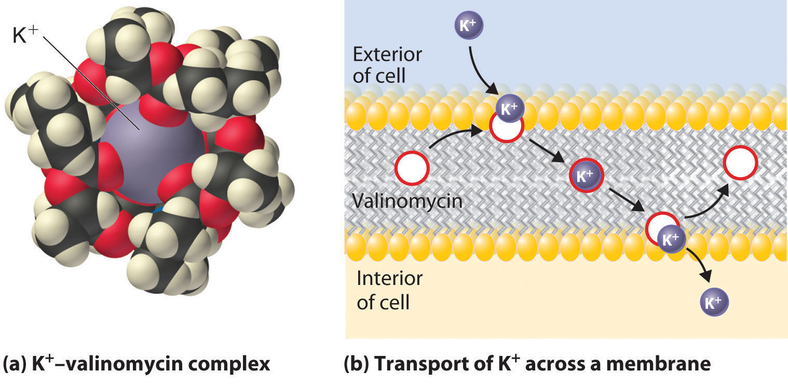

The s-block elements play important roles in biological systems. Covalent hydrides, for example, are the building blocks of organic compounds, and other compounds and ions containing s-block elements are found in tissues and cellular fluids. In this section, we describe some ways in which biology depends on the properties of the group 1 and group 2 elements.
There are three major classes of hydrides—covalent, ionic, and metallic—but only covalent hydrides occur in living cells and have any biochemical significance. As you learned in Chapter 7 "The Periodic Table and Periodic Trends", carbon and hydrogen have similar electronegativities, and the C–H bonds in organic molecules are strong and essentially nonpolar. Little acid–base chemistry is involved in the cleavage or formation of these bonds. In contrast, because hydrogen is less electronegative than oxygen and nitrogen (symbolized by Z), the H–Z bond in the hydrides of these elements is polarized (Hδ+–Zδ−). Consequently, the hydrogen atoms in these H–Z bonds are relatively acidic. Moreover, S–H bonds are relatively weak due to poor s orbital overlap, so they are readily cleaved to give a proton. Hydrides in which H is bonded to O, N, or S atoms are therefore polar, hydrophilic molecules that form hydrogen bonds. They also undergo acid–base reactions by transferring a proton.
Covalent hydrides in which H is bonded to O, N, or S atoms are polar and hydrophilic, form hydrogen bonds, and transfer a proton in their acid-base reactions.
Hydrogen bonds are crucial in biochemistry, in part because they help hold proteins in their biologically active folded structures. Hydrogen bonds also connect the two intertwining strands of DNA (deoxyribonucleic acid), the substance that contains the genetic code for all organisms. (For more information on DNA, see Chapter 24 "Organic Compounds", Section 24.6 "The Molecules of Life".) Because hydrogen bonds are easier to break than the covalent bonds that form the individual DNA strands, the two intertwined strands can be separated to give intact single strands, which is essential for the duplication of genetic information.
In addition to the importance of hydrogen bonds in biochemical molecules, the extensive hydrogen-bonding network in water is one of the keys to the existence of life on our planet. Based on its molecular mass, water should be a gas at room temperature (20°C), but the strong intermolecular interactions in liquid water greatly increase its boiling point. Hydrogen bonding also produces the relatively open molecular arrangement found in ice, which causes ice to be less dense than water. Because ice floats on the surface of water, it creates an insulating layer that allows aquatic organisms to survive during cold winter months.
These same strong intermolecular hydrogen-bonding interactions are also responsible for the high heat capacity of water and its high heat of fusion. A great deal of energy must be removed from water for it to freeze. Consequently, as noted in Chapter 5 "Energy Changes in Chemical Reactions", large bodies of water act as “thermal buffers” that have a stabilizing effect on the climate of adjacent land areas. Perhaps the most striking example of this effect is the fact that humans can live comfortably at very high latitudes. For example, palm trees grow in southern England at the same latitude (51°N) as the southern end of frigid Hudson Bay and northern Newfoundland in North America, areas known more for their moose populations than for their tropical vegetation. Warm water from the Gulf Stream current in the Atlantic Ocean flows clockwise from the tropical climate at the equator past the eastern coast of the United States and then turns toward England, where heat stored in the water is released. The temperate climate of Europe is largely attributable to the thermal properties of water.
Strong intermolecular hydrogen-bonding interactions are responsible for the high heat capacity of water and its high heat of fusion.
The members of group 1 and group 2 that are present in the largest amounts in organisms are sodium, potassium, magnesium, and calcium, all of which form monatomic cations with a charge of +1 (group 1, M+) or +2 (group 2, M2+). Biologically, these elements can be classified as macrominerals (Table 1.6 "Approximate Elemental Composition of a Typical 70 kg Human").
For example, calcium is found in the form of relatively insoluble calcium salts that are used as structural materials in many organisms. Hydroxyapatite [Ca5(PO4)3OH] is the major component of bones, calcium carbonate (CaCO3) is the major component of the shells of mollusks and the eggs of birds and reptiles, and calcium oxalate (CaO2CCO2) is found in many plants. Because calcium and strontium have similar sizes and charge-to-radius ratios, small quantities of strontium are always found in bone and other calcium-containing structural materials. Normally this is not a problem because the Sr2+ ions occupy sites that would otherwise be occupied by Ca2+ ions. When trace amounts of radioactive 90Sr are released into the atmosphere from nuclear weapons tests or a nuclear accident, however, the radioactive strontium eventually reaches the ground, where it is taken up by plants that are consumed by dairy cattle. The isotope then becomes concentrated in cow’s milk, along with calcium. Because radioactive strontium coprecipitates with calcium in the hydroxyapatite that surrounds the bone marrow (where white blood cells are produced), children, who typically ingest more cow’s milk than adults, are at substantially increased risk for leukemia, a type of cancer characterized by the overproduction of white blood cells.
The Na+, K+, Mg2+, and Ca2+ ions are important components of intracellular and extracellular fluids. Both Na+ and Ca2+ are found primarily in extracellular fluids, such as blood plasma, whereas K+ and Mg2+ are found primarily in intracellular fluids. Substantial inputs of energy are required to establish and maintain these concentration gradients and prevent the system from reaching equilibrium. Thus energy is needed to transport each ion across the cell membrane toward the side with the higher concentration. The biological machines that are responsible for the selective transport of these metal ions are complex assemblies of proteins called ion pumpsA complex assembly of proteins that selectively transport ions across cell membranes by their high affinity for ions of a certain charge and radius.. Ion pumps recognize and discriminate between metal ions in the same way that crown ethers and cryptands do, with a high affinity for ions of a certain charge and radius.
Defects in the ion pumps or their control mechanisms can result in major health problems. For example, cystic fibrosis, the most common inherited disease in the United States, is caused by a defect in the transport system (in this case, chloride ions). Similarly, in many cases, hypertension, or high blood pressure, is thought to be due to defective Na+ uptake and/or excretion. If too much Na+ is absorbed from the diet (or if too little is excreted), water diffuses from tissues into the blood to dilute the solution, thereby decreasing the osmotic pressure in the circulatory system. The increased volume increases the blood pressure, and ruptured arteries called aneurysms can result, often in the brain. Because high blood pressure causes other medical problems as well, it is one of the most important biomedical disorders in modern society.
For patients who suffer from hypertension, low-sodium diets that use NaCl substitutes, such as KCl, are often prescribed. Although KCl and NaCl give similar flavors to foods, the K+ is not readily taken up by the highly specific Na+-uptake system. This approach to controlling hypertension is controversial, however, because direct correlations between dietary Na+ content and blood pressure are difficult to demonstrate in the general population. More important, recent observations indicate that high blood pressure may correlate more closely with inadequate intake of calcium in the diet than with excessive sodium levels. This finding is important because the typical “low-sodium” diet is also low in good sources of calcium, such as dairy products.
Some of the most important biological functions of the group 1 and group 2 metals are due to small changes in the cellular concentrations of the metal ion. The transmission of nerve impulses, for example, is accompanied by an increased flux of Na+ ions into a nerve cell. Similarly, the binding of various hormones to specific receptors on the surface of a cell leads to a rapid influx of Ca2+ ions; the resulting sudden rise in the intracellular Ca2+ concentration triggers other events, such as muscle contraction, the release of neurotransmitters, enzyme activation, or the secretion of other hormones.
Within cells, K+ and Mg2+ often activate particular enzymes by binding to specific, negatively charged sites in the enzyme structure. Chlorophyll, the green pigment used by all plants to absorb light and drive the process of photosynthesis, contains magnesium. During photosynthesis, CO2 is reduced to form sugars such as glucose. The structure of the central portion of a chlorophyll molecule resembles a crown ether (part (a) in Figure 13.7 "Crown Ethers and Cryptands") with four five-member nitrogen-containing rings linked together to form a large ring that provides a “hole” the proper size to tightly bind Mg2+.
The structure of the central core of chlorophyll, a magnesium complex present in all photosynthetic tissues. Note the resemblance to the crown ether complexes discussed in Chapter 13 "Solutions".
Because the health of cells depends on maintaining the proper levels of cations in intracellular fluids, any change that affects the normal flux of metal ions across cell membranes could well cause an organism to die. Molecules that facilitate the transport of metal ions across membranes are generally called ionophoresA molecule that facilitates the transport of metal ions across membranes. (ion plus phore from the Greek phorein, meaning “to carry”). Many ionophores are potent antibiotics that can kill or inhibit the growth of bacteria. An example is valinomycin, a cyclic molecule with a central cavity lined with oxygen atoms (part (a) in Figure 21.14 "Valinomycin Is an Antibiotic That Functions Like an Ionophore") that is similar to the cavity of a crown ether (part (a) in Figure 13.7 "Crown Ethers and Cryptands"). Like a crown ether, valinomycin is highly selective: its affinity for K+ is about 1000 times greater than that for Na+. By increasing the flux of K+ ions into cells, valinomycin disrupts the normal K+ gradient across a cell membrane, thereby killing the cell (part (b) in Figure 21.14 "Valinomycin Is an Antibiotic That Functions Like an Ionophore").
Figure 21.14 Valinomycin Is an Antibiotic That Functions Like an Ionophore
(a) This model of the structure of the K+–valinomycin complex, determined by x-ray diffraction, shows how the valinomycin molecule wraps itself around the K+ ion, shielding it from the environment, in a manner reminiscent of a crown ether complex. (For more information on the crown ethers, see Chapter 13 "Solutions", Section 13.2 "Solubility and Molecular Structure".) (b) Valinomycin kills bacteria by facilitating the transport of K+ ions across the cell membrane, thereby disrupting the normal distribution of ions in the bacterium. At the surface of the membrane, valinomycin binds a K+ ion. Because the hydrophobic exterior of the valinomycin molecule forms a “doughnut” that shields the positive charge of the metal ion, the K+–valinomycin complex is highly soluble in the nonpolar interior of the membrane. After the K+–valinomycin complex diffuses across the membrane to the interior of the cell, the K+ ion is released, and the valinomycin is free to diffuse back to the other side of the membrane to bind another K+ ion. Valinomycin thereby destroys the normal K+ gradient across the membrane, killing the cell.
A common way to study the function of a metal ion in biology is to replace the naturally occurring metal with one whose reactivity can be traced by spectroscopic methods. The substitute metal ion must bind to the same site as the naturally occurring ion, and it must have a similar (or greater) affinity for that site, as indicated by its charge density. Arrange the following ions in order of increasing effectiveness as a replacement for Ca2+, which has an ionic radius of 100 pm (numbers in parentheses are ionic radii): Na+ (102 pm), Eu2+ (117 pm), Sr2+ (118 pm), F− (133 pm), Pb2+ (119 pm), and La3+ (103 pm). Explain your reasoning.
Given: ions and ionic radii
Asked for: suitability as replacement for Ca2+
Strategy:
Use periodic trends to arrange the ions from least effective to most effective as a replacement for Ca2+.
Solution:
The most important properties in determining the affinity of a biological molecule for a metal ion are the size and charge-to-radius ratio of the metal ion. Of the possible Ca2+ replacements listed, the F− ion has the opposite charge, so it should have no affinity for a Ca2+-binding site. Na+ is approximately the right size, but with a +1 charge it will bind much more weakly than Ca2+. Although Eu2+, Sr2+, and Pb2+ are all a little larger than Ca2+, they are probably similar enough in size and charge to bind. Based on its ionic radius, Eu2+ should bind most tightly of the three. La3+ is nearly the same size as Ca2+ and more highly charged. With a higher charge-to-radius ratio and a similar size, La3+ should bind tightly to a Ca2+ site and be the most effective replacement for Ca2+. The order is F− << Na+ << Pb2+ ~ Sr2+ ~ Eu2+ < La3+.
Exercise
The ionic radius of K+ is 138 pm. Arrange the following ions in order of increasing affinity for a K+-binding site in an enzyme (numbers in parentheses are ionic radii): Na+ (102 pm), Rb+ (152 pm), Ba2+ (135 pm), Cl− (181 pm), and Tl+ (150 pm).
Answer: Cl− << Na+ < Tl+ ~ Rb+ < Ba2+
Covalent hydrides in which hydrogen is bonded to oxygen, nitrogen, or sulfur are polar, hydrophilic molecules that form hydrogen bonds and undergo acid–base reactions. Hydrogen-bonding interactions are crucial in stabilizing the structure of proteins and DNA and allow genetic information to be duplicated. The hydrogen-bonding interactions in water and ice also allow life to exist on our planet. The group 1 and group 2 metals present in organisms are macrominerals, which are important components of intracellular and extracellular fluids. Small changes in the cellular concentration of a metal ion can have a significant impact on biological functions. Metal ions are selectively transported across cell membranes by ion pumps, which bind ions based on their charge and radius. Ionophores, many of which are potent antibiotics, facilitate the transport of metal ions across membranes.
Explain the thermochemical properties of water in terms of its intermolecular bonding interactions. How does this affect global climate patterns?
Of the three classes of hydrides, which is (are) biochemically significant? How do you account for this?
Many proteins are degraded and become nonfunctional when heated higher than a certain temperature, even though the individual protein molecules do not undergo a distinct chemical change. Propose an explanation for this observation.
Los Angeles has moderate weather throughout the year, with average temperatures between 57°F and 70°F. In contrast, Palm Springs, which is just 100 miles inland, has average temperatures between 55°F and 95°F. Explain the difference in the average temperature ranges between the two cities.
Although all group 1 ions have the same charge (+1), Na+ and K+ ions are selectively transported across cell membranes. What strategy do organisms employ to discriminate between these two cations?
A 0.156 g sample of a chloride salt of an alkaline earth metal is dissolved in enough water to make 20.5 mL of solution. If this solution has an osmotic pressure of 2.68 atm at 25°C, what is the identity of the alkaline earth metal?
The thermal buffering capacity of water is one of the reasons the human body is capable of withstanding a wide range of temperatures. How much heat (in kilojoules) is required to raise the temperature of a 70.0 kg human from 37.0°C to 38.0°C? Assume that 70% of the mass of the body is water and that body fluids have the same specific heat as water.
During illness, body temperature can increase by more than 2°C. One piece of folklore is that you should “feed a fever.” Using the data in Table 5.5 "Approximate Compositions and Fuel Values of Some Common Foods", how many fried chicken drumsticks would a 70.0 kg person need to eat to generate a 2.0°C change in body temperature? Assume the following: there is complete conversion of the caloric content of the chicken to thermal energy, 70% of the mass of the body is solely due to water, and body fluids have the same specific heat as water.
Hydrogen bonding is partly responsible for the high enthalpy of vaporization of water (ΔHvap = 43.99 kJ/mol at 25°C), which contributes to cooling the body during exercise. Assume that a 50.0 kg runner produces 20.0 g of perspiration during a race, and all the perspiration is converted to water vapor at 37.0°C. What amount of heat (in joules) is removed from the runner’s skin if the perspiration consists of only water?
Ba